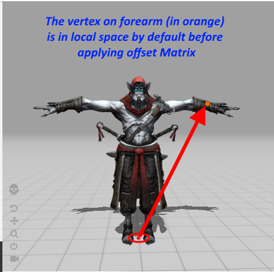
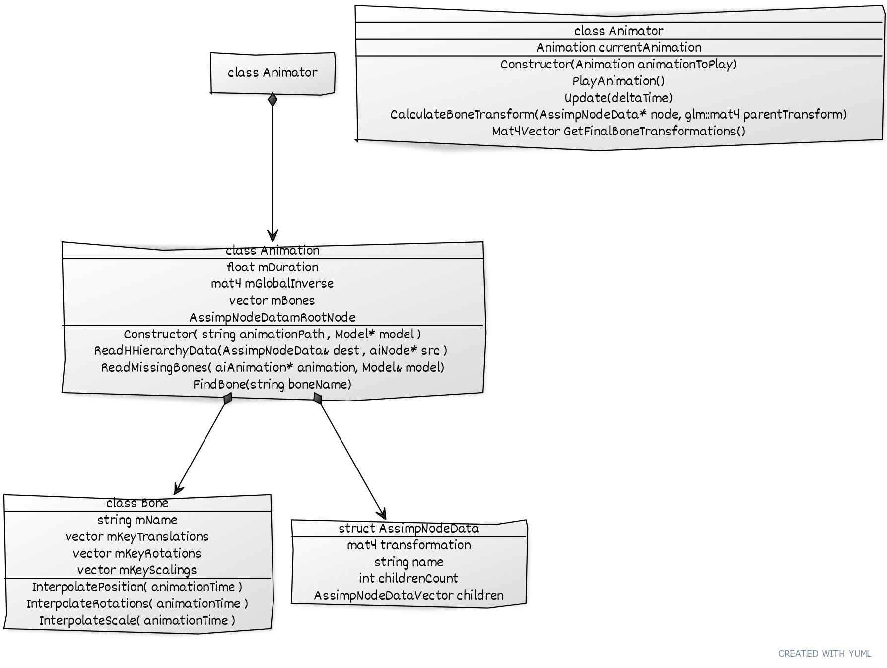

骨骼动画
| 原文 | Skeletal-Animation |
|---|---|
| 作者 | Ankit Singh Kushwah |
| 翻译 | orbitgw |
| 校对 | orbitgw |
3D动画可以让我们的游戏栩栩如生。3D世界中的物体，比如人类和动物，当它们做某些事情移动四肢时，比如走路、跑步和攻击，会使我们感到更生动。本篇教程是关于你们一直在等待的骨骼动画。我们将首先彻底理解这个概念，然后了解使用Assimp制作3D模型动画所需的数据。我建议您完成本教程的模型加载部分，因为本教程代码将从那里继续。你仍然可以理解这个概念，并以自己的方式实现它。所以让我们开始吧。
插值
要了解动画是如何工作的基础，我们需要了解插值(Interpolation)的概念。插值可以定义为随着时间的推移而发生的事情。就像敌人在时间T上从A点移动到B点一样，即随着时间的推移发生平移。炮塔平滑旋转以面对目标，即随着时间的推移发生旋转，树在时间T内从尺寸A放大到尺寸B，即随时间推移发生缩放。
译注
(动画)插值就是关键帧的中间值。比如我们使用Blender制作动画，不需要设置每一帧的骨骼位置，只需要在几个关键帧中记录它们的位置，旋转，缩放等等信息。然后由程序自动计算出的中间的过渡帧就是我们的插值。通常插值可以使用曲线描述，比如我们的贝塞尔曲线。
用于平移和缩放的简单插值方程如下所示：
它被称为线性插值方程或Lerp。对于旋转，我们不能使用向量。原因是，如果我们继续尝试在X（俯仰）、Y（偏航）和Z（滚转）的向量上使用线性插值方程，插值就不会是线性的。你会遇到一些奇怪的问题，比如Gimbal Lock（请参阅下面的参考资料部分了解它）。为了避免这个问题，我们使用四元数进行旋转。四元数提供了一种叫做球面插值或Slerp方程的东西，它给出了与Lerp相同的结果，但对于两个旋转A和B。我无法解释这个方程是如何工作的，因为它目前不在范围内。您可以查看下面的参考资料部分来理解四元数。
动画模型的组件：蒙皮、骨骼和关键帧
动画的整个过程始于添加第一个组件，即blender或Maya等软件中的蒙皮(Skin)。蒙皮只不过是网格(Mesh)，它为模型添加了视觉方面，告诉观察者它的外观。但是，如果你想移动任何网格，那么就像现实世界一样，你需要添加骨骼。你可以看到下面的图片来了解它在blender等软件中的外观。


这些骨头通常是以分层的方式添加给人类和动物等角色的，原因很明显。我们想要四肢之间的父子关系(parent-child relationship)。例如，如果我们移动右肩，那么我们的右二头肌、前臂、手和手指也应该移动。这就是层次结构的样子：
在上图中，如果你抓住髋骨(hip bone)并移动它，所有的肢体都会受到它的移动的影响。
此时，我们已经准备好为动画创建关键帧了。关键帧是动画中不同时间点的姿势。我们将在这些关键帧之间进行插值，以便在代码中从一个姿势平滑地过渡到另一个姿势。下面您可以看到如何为简单的4帧跳跃动画创建姿势：


Assimp如何保存动画数据
我们马上就会到代码部分，但首先我们需要了解assimp是如何保存导入的动画数据的。看下图：

就像模型加载部分一样，我们将从aiScene指针开始，该指针包含指向根节点的指针，然后看看我们这里有什么，一个动画数组。这个aiAnimation数组包含一般信息，比如动画的持续时间，这里表示为mDuration，然后我们有一个mTicksPerSecond变量，它控制我们应该在帧之间插值的速度。如果您还记得上一节中的动画有关键帧。类似地，aiAnimation包含一个名为Channels的aiNodeAnim数组。此数组包含将要参与动画的所有骨骼及其关键帧。一个aiNodeAnim包含骨骼的名称，你会发现在这里插入三种类型的关键点，平移、旋转和缩放。
好吧，还有最后一件事我们需要理解，并且很乐意去做的一件事就是写代码。
多个骨骼对顶点的影响
当我们弯曲前臂时，我们会看到我们的二头肌弹出。我们也可以说前臂骨骼的变形正在影响我们肱二头肌上的顶点。类似地，可能有多个骨骼影响网格中的单个顶点。对于像固体金属机器人这样的角色，所有前臂顶点都只会受到前臂骨骼的影响，但对于像人类、动物等角色，可能有多达4块骨骼可以影响一个顶点。让我们看看assimp是如何存储这些信息的：

我们再次从aiScene指针开始，该指针包含所有aiMeshes的数组。每个aiMesh对象都有一个aiBone数组，其中包含诸如此aiBone将对网格上的顶点集产生多大影响之类的信息。aiBone包含骨骼的名称，这是一个aiVertexWeight数组，基本上告诉此aiBone对网格上的顶点有多大影响。现在我们有了aiBone的另一个成员，它是offsetMatrix。这是一个4x4矩阵，用于将顶点从模型空间转换到骨骼空间。你可以在下面的图片中看到这一点：


当顶点位于骨骼空间中时，它们将按照预期相对于骨骼进行变换。您很快就会在代码中看到这一点。
最后让我们写代码
谢谢你走到这一步。我们将从直接查看最终结果开始，这是我们的最终顶点着色器代码。这将给我们很好的感觉，我们最终需要什么。
#version 430 core
layout(location = 0) in vec3 pos;
layout(location = 1) in vec3 norm;
layout(location = 2) in vec2 tex;
layout(location = 5) in ivec4 boneIds;
layout(location = 6) in vec4 weights;
uniform mat4 projection;
uniform mat4 view;
uniform mat4 model;
const int MAX_BONES = 100;
const int MAX_BONE_INFLUENCE = 4;
uniform mat4 finalBonesMatrices[MAX_BONES];
out vec2 TexCoords;
void main()
{
vec4 totalPosition = vec4(0.0f);
for(int i = 0 ; i < MAX_BONE_INFLUENCE ; i++)
{
if(boneIds[i] == -1)
continue;
if(boneIds[i] >=MAX_BONES)
{
totalPosition = vec4(pos,1.0f);
break;
}
vec4 localPosition = finalBonesMatrices[boneIds[i]] * vec4(pos,1.0f);
totalPosition += localPosition * weights[i];
vec3 localNormal = mat3(finalBonesMatrices[boneIds[i]]) * norm;
}
mat4 viewModel = view * model;
gl_Position = projection * viewModel * totalPosition;
TexCoords = tex;
}
片段着色器与这篇教程中的保持相同。从顶部开始，您可以看到两个新的属性布局声明。第一个骨骼ID，第二个是重量。我们还有一个统一的数组finalBonesMatrix，它存储所有骨骼的变换。boneIds包含用于读取最终BonesMatrix数组并将这些变换应用于pos顶点的索引，其各自的权重存储在权重数组中。这发生在上面循环的内部。现在，让我们先在Mesh类中添加对骨骼重量的支持：
#define MAX_BONE_INFLUENCE 4
struct Vertex {
// position
glm::vec3 Position;
// normal
glm::vec3 Normal;
// texCoords
glm::vec2 TexCoords;
// tangent
glm::vec3 Tangent;
// bitangent
glm::vec3 Bitangent;
//bone indexes which will influence this vertex
int m_BoneIDs[MAX_BONE_INFLUENCE];
//weights from each bone
float m_Weights[MAX_BONE_INFLUENCE];
};
我们为顶点添加了两个新属性，就像我们在顶点着色器中看到的那样。现在，让我们将它们加载到GPU缓冲区中，就像我们的Mesh::setupMesh函数中的其他属性一样：
class Mesh
{
...
void setupMesh()
{
....
// ids
glEnableVertexAttribArray(3);
glVertexAttribIPointer(3, 4, GL_INT, sizeof(Vertex), (void*)offsetof(Vertex, m_BoneIDs));
// weights
glEnableVertexAttribArray(4);
glVertexAttribPointer(4, 4, GL_FLOAT, GL_FALSE, sizeof(Vertex),
(void*)offsetof(Vertex, m_Weights));
...
}
...
}
就像以前一样，只是现在我们为boneID和weights添加了3个和4个布局位置ID。这里需要注意的一件重要的事情是我们如何传递boneID的数据。我们使用的是glVertexAttribIPointer，并将GL_INT作为第三个参数传递。
现在我们可以从assimp数据结构中提取骨骼重量信息。让我们在Model类中进行一些更改：
struct BoneInfo
{
/*id is index in finalBoneMatrices*/
int id;
/*offset matrix transforms vertex from model space to bone space*/
glm::mat4 offset;
};
此BoneInfo将存储我们的偏移矩阵，以及一个唯一的id，该id将用作索引，将其存储在我们之前在着色器中看到的最终BoneMatrices数组中。现在我们将在Model中添加骨量提取支持：
class Model
{
private:
...
std::map<string, BoneInfo> m_BoneInfoMap; //
int m_BoneCounter = 0;
auto& GetBoneInfoMap() { return m_BoneInfoMap; }
int& GetBoneCount() { return m_BoneCounter; }
...
void SetVertexBoneDataToDefault(Vertex& vertex)
{
for (int i = 0; i < MAX_BONE_WEIGHTS; i++)
{
vertex.m_BoneIDs[i] = -1;
vertex.m_Weights[i] = 0.0f;
}
}
Mesh processMesh(aiMesh* mesh, const aiScene* scene)
{
vector vertices;
vector indices;
vector textures;
for (unsigned int i = 0; i < mesh->mNumVertices; i++)
{
Vertex vertex;
SetVertexBoneDataToDefault(vertex);
vertex.Position = AssimpGLMHelpers::GetGLMVec(mesh->mVertices[i]);
vertex.Normal = AssimpGLMHelpers::GetGLMVec(mesh->mNormals[i]);
if (mesh->mTextureCoords[0])
{
glm::vec2 vec;
vec.x = mesh->mTextureCoords[0][i].x;
vec.y = mesh->mTextureCoords[0][i].y;
vertex.TexCoords = vec;
}
else
vertex.TexCoords = glm::vec2(0.0f, 0.0f);
vertices.push_back(vertex);
}
...
ExtractBoneWeightForVertices(vertices,mesh,scene);
return Mesh(vertices, indices, textures);
}
void SetVertexBoneData(Vertex& vertex, int boneID, float weight)
{
for (int i = 0; i < MAX_BONE_WEIGHTS; ++i)
{
if (vertex.m_BoneIDs[i] < 0)
{
vertex.m_Weights[i] = weight;
vertex.m_BoneIDs[i] = boneID;
break;
}
}
}
void ExtractBoneWeightForVertices(std::vector& vertices, aiMesh* mesh, const aiScene* scene)
{
for (int boneIndex = 0; boneIndex < mesh->mNumBones; ++boneIndex)
{
int boneID = -1;
std::string boneName = mesh->mBones[boneIndex]->mName.C_Str();
if (m_BoneInfoMap.find(boneName) == m_BoneInfoMap.end())
{
BoneInfo newBoneInfo;
newBoneInfo.id = m_BoneCounter;
newBoneInfo.offset = AssimpGLMHelpers::ConvertMatrixToGLMFormat(
mesh->mBones[boneIndex]->mOffsetMatrix);
m_BoneInfoMap[boneName] = newBoneInfo;
boneID = m_BoneCounter;
m_BoneCounter++;
}
else
{
boneID = m_BoneInfoMap[boneName].id;
}
assert(boneID != -1);
auto weights = mesh->mBones[boneIndex]->mWeights;
int numWeights = mesh->mBones[boneIndex]->mNumWeights;
for (int weightIndex = 0; weightIndex < numWeights; ++weightIndex)
{
int vertexId = weights[weightIndex].mVertexId;
float weight = weights[weightIndex].mWeight;
assert(vertexId <= vertices.size());
SetVertexBoneData(vertices[vertexId], boneID, weight);
}
}
}
...
};
我们首先声明一个映射m_BoneInfoMap和一个计数器m_BoneCounter，一旦我们读取到一个新的骨骼，它就会增加。我们在前面的图表中看到，每个aiMesh都包含与aiMesh关联的所有aiBone。骨量提取的整个过程都是从processMesh函数开始的。对于每个循环迭代，我们通过调用函数SetVertexBoneDataToDefault将m_BoneID和m_Weights设置为其默认值。就在processMesh函数结束之前，我们调用ExtractBoneWeightData。在ExtractBoneWeightData中，我们为每个aiBone运行for循环，并检查该骨骼是否已存在于m_BoneInfoMap中。如果我们找不到它，那么它被认为是一块新骨头，我们创建一个带有id的新BoneInfo，并将其关联的mOffsetMatrix存储到它。然后我们将这个新BoneIInfo存储在m_BoneInfoMap中，然后我们递增m_BoneCounter计数器，为下一块骨头创建一个id。如果我们在m_BoneInfoMap中找到骨骼名称，那么这意味着该骨骼会影响超出其范围的网格顶点。所以我们取它的Id，进一步了解它会影响哪些顶点。
需要注意的一点是，我们正在调用AssimpGLMHelpers::ConvertMatrixToGLMFormat。Assimp以与GLM不同的格式存储其矩阵数据，因此此函数仅为我们提供GLM格式的矩阵。
我们已经提取了骨骼的offsetMatrix，现在我们将简单地迭代其aiVertexWeightarray，提取将受此骨骼影响的所有顶点索引及其各自的权重，并调用SetVertexBoneData以使用提取的信息填充Vertex.boneIds和Vertex.weights。
呜！到这里你应当休息一下。
骨骼、动画和动画制作类
这是类的视图：

让我们提醒自己我们正在努力实现什么。对于每个渲染帧，我们希望平滑地插值继承中的所有骨骼，并获得它们的最终变换矩阵，这些矩阵将提供给着色器统一的finalBonesMatrix。以下是每个类的内容：
Bone : 从aiNodeAnim读取所有关键帧数据的单个骨骼。它还将根据当前动画时间在关键帧之间进行插值，即平移、缩放和旋转。
AssimpNodeData : 这个结构体将帮助我们将动画从Assimp提取出来。
Animation : 从aiAnimation读取数据并创建Bones的继承记录的资源。
Animator : 这将读取AssimpNodeData的继承方法，以递归方式插入所有骨骼，然后为我们准备所需的最终骨骼转换矩阵。
这就是代码：
struct KeyPosition
{
glm::vec3 position;
float timeStamp;
};
struct KeyRotation
{
glm::quat orientation;
float timeStamp;
};
struct KeyScale
{
glm::vec3 scale;
float timeStamp;
};
class Bone
{
private:
std::vector<KeyPosition> m_Positions;
std::vector<KeyRotation> m_Rotations;
std::vector<KeyScale> m_Scales;
int m_NumPositions;
int m_NumRotations;
int m_NumScalings;
glm::mat4 m_LocalTransform;
std::string m_Name;
int m_ID;
public:
/*reads keyframes from aiNodeAnim*/
Bone(const std::string& name, int ID, const aiNodeAnim* channel)
:
m_Name(name),
m_ID(ID),
m_LocalTransform(1.0f)
{
m_NumPositions = channel->mNumPositionKeys;
for (int positionIndex = 0; positionIndex < m_NumPositions; ++positionIndex)
{
aiVector3D aiPosition = channel->mPositionKeys[positionIndex].mValue;
float timeStamp = channel->mPositionKeys[positionIndex].mTime;
KeyPosition data;
data.position = AssimpGLMHelpers::GetGLMVec(aiPosition);
data.timeStamp = timeStamp;
m_Positions.push_back(data);
}
m_NumRotations = channel->mNumRotationKeys;
for (int rotationIndex = 0; rotationIndex < m_NumRotations; ++rotationIndex)
{
aiQuaternion aiOrientation = channel->mRotationKeys[rotationIndex].mValue;
float timeStamp = channel->mRotationKeys[rotationIndex].mTime;
KeyRotation data;
data.orientation = AssimpGLMHelpers::GetGLMQuat(aiOrientation);
data.timeStamp = timeStamp;
m_Rotations.push_back(data);
}
m_NumScalings = channel->mNumScalingKeys;
for (int keyIndex = 0; keyIndex < m_NumScalings; ++keyIndex)
{
aiVector3D scale = channel->mScalingKeys[keyIndex].mValue;
float timeStamp = channel->mScalingKeys[keyIndex].mTime;
KeyScale data;
data.scale = AssimpGLMHelpers::GetGLMVec(scale);
data.timeStamp = timeStamp;
m_Scales.push_back(data);
}
}
/*interpolates b/w positions,rotations & scaling keys based on the curren time of
the animation and prepares the local transformation matrix by combining all keys
tranformations*/
void Update(float animationTime)
{
glm::mat4 translation = InterpolatePosition(animationTime);
glm::mat4 rotation = InterpolateRotation(animationTime);
glm::mat4 scale = InterpolateScaling(animationTime);
m_LocalTransform = translation * rotation * scale;
}
glm::mat4 GetLocalTransform() { return m_LocalTransform; }
std::string GetBoneName() const { return m_Name; }
int GetBoneID() { return m_ID; }
/* Gets the current index on mKeyPositions to interpolate to based on
the current animation time*/
int GetPositionIndex(float animationTime)
{
for (int index = 0; index < m_NumPositions - 1; ++index)
{
if (animationTime < m_Positions[index + 1].timeStamp)
return index;
}
assert(0);
}
/* Gets the current index on mKeyRotations to interpolate to based on the
current animation time*/
int GetRotationIndex(float animationTime)
{
for (int index = 0; index < m_NumRotations - 1; ++index)
{
if (animationTime < m_Rotations[index + 1].timeStamp)
return index;
}
assert(0);
}
/* Gets the current index on mKeyScalings to interpolate to based on the
current animation time */
int GetScaleIndex(float animationTime)
{
for (int index = 0; index < m_NumScalings - 1; ++index)
{
if (animationTime < m_Scales[index + 1].timeStamp)
return index;
}
assert(0);
}
private:
/* Gets normalized value for Lerp & Slerp*/
float GetScaleFactor(float lastTimeStamp, float nextTimeStamp, float animationTime)
{
float scaleFactor = 0.0f;
float midWayLength = animationTime - lastTimeStamp;
float framesDiff = nextTimeStamp - lastTimeStamp;
scaleFactor = midWayLength / framesDiff;
return scaleFactor;
}
/*figures out which position keys to interpolate b/w and performs the interpolation
and returns the translation matrix*/
glm::mat4 InterpolatePosition(float animationTime)
{
if (1 == m_NumPositions)
return glm::translate(glm::mat4(1.0f), m_Positions[0].position);
int p0Index = GetPositionIndex(animationTime);
int p1Index = p0Index + 1;
float scaleFactor = GetScaleFactor(m_Positions[p0Index].timeStamp,
m_Positions[p1Index].timeStamp, animationTime);
glm::vec3 finalPosition = glm::mix(m_Positions[p0Index].position,
m_Positions[p1Index].position, scaleFactor);
return glm::translate(glm::mat4(1.0f), finalPosition);
}
/*figures out which rotations keys to interpolate b/w and performs the interpolation
and returns the rotation matrix*/
glm::mat4 InterpolateRotation(float animationTime)
{
if (1 == m_NumRotations)
{
auto rotation = glm::normalize(m_Rotations[0].orientation);
return glm::toMat4(rotation);
}
int p0Index = GetRotationIndex(animationTime);
int p1Index = p0Index + 1;
float scaleFactor = GetScaleFactor(m_Rotations[p0Index].timeStamp,
m_Rotations[p1Index].timeStamp, animationTime);
glm::quat finalRotation = glm::slerp(m_Rotations[p0Index].orientation,
m_Rotations[p1Index].orientation, scaleFactor);
finalRotation = glm::normalize(finalRotation);
return glm::toMat4(finalRotation);
}
/*figures out which scaling keys to interpolate b/w and performs the interpolation
and returns the scale matrix*/
glm::mat4 Bone::InterpolateScaling(float animationTime)
{
if (1 == m_NumScalings)
return glm::scale(glm::mat4(1.0f), m_Scales[0].scale);
int p0Index = GetScaleIndex(animationTime);
int p1Index = p0Index + 1;
float scaleFactor = GetScaleFactor(m_Scales[p0Index].timeStamp,
m_Scales[p1Index].timeStamp, animationTime);
glm::vec3 finalScale = glm::mix(m_Scales[p0Index].scale, m_Scales[p1Index].scale
, scaleFactor);
return glm::scale(glm::mat4(1.0f), finalScale);
}
};
我们首先为我们的键类型创建3个结构。每个结构都有一个值和一个时间戳。时间戳告诉我们在动画的哪个点需要插值到它的值。Bone有一个构造函数，它从aiNodeAnim读取密钥并将密钥及其时间戳存储到mPositionKeys、mRotationKeys和mScalingKeys。主要插值过程从更新(float animationTime)开始，该过程在每帧调用一次。此函数调用所有键类型的相应插值函数，并组合所有最终插值结果，并将其存储到4x4矩阵m_LocalTransform中。平移和缩放关键点的插值函数相似，但对于旋转，我们使用Slerp在四元数之间进行插值。Lerp和Slerp都有3个论点。第一个参数取最后一个键，第二个参数取下一个键和第三个参数取范围为0-1的值，我们在这里称之为比例因子。让我们看看如何在函数GetScaleFactor中计算这个比例因子：

在代码中：
float midWayLength = animationTime - lastTimeStamp;
float framesDiff = nextTimeStamp - lastTimeStamp;
scaleFactor = midWayLength / framesDiff;
现在让我们继续转到Animation类：
struct AssimpNodeData
{
glm::mat4 transformation;
std::string name;
int childrenCount;
std::vector<AssimpNodeData> children;
};
class Animation
{
public:
Animation() = default;
Animation(const std::string& animationPath, Model* model)
{
Assimp::Importer importer;
const aiScene* scene = importer.ReadFile(animationPath, aiProcess_Triangulate);
assert(scene && scene->mRootNode);
auto animation = scene->mAnimations[0];
m_Duration = animation->mDuration;
m_TicksPerSecond = animation->mTicksPerSecond;
ReadHeirarchyData(m_RootNode, scene->mRootNode);
ReadMissingBones(animation, *model);
}
~Animation()
{
}
Bone* FindBone(const std::string& name)
{
auto iter = std::find_if(m_Bones.begin(), m_Bones.end(),
[&](const Bone& Bone)
{
return Bone.GetBoneName() == name;
}
);
if (iter == m_Bones.end()) return nullptr;
else return &(*iter);
}
inline float GetTicksPerSecond() { return m_TicksPerSecond; }
inline float GetDuration() { return m_Duration;}
inline const AssimpNodeData& GetRootNode() { return m_RootNode; }
inline const std::map<std::string,BoneInfo>& GetBoneIDMap()
{
return m_BoneInfoMap;
}
private:
void ReadMissingBones(const aiAnimation* animation, Model& model)
{
int size = animation->mNumChannels;
auto& boneInfoMap = model.GetBoneInfoMap();//getting m_BoneInfoMap from Model class
int& boneCount = model.GetBoneCount(); //getting the m_BoneCounter from Model class
//reading channels(bones engaged in an animation and their keyframes)
for (int i = 0; i < size; i++)
{
auto channel = animation->mChannels[i];
std::string boneName = channel->mNodeName.data;
if (boneInfoMap.find(boneName) == boneInfoMap.end())
{
boneInfoMap[boneName].id = boneCount;
boneCount++;
}
m_Bones.push_back(Bone(channel->mNodeName.data,
boneInfoMap[channel->mNodeName.data].id, channel));
}
m_BoneInfoMap = boneInfoMap;
}
void ReadHeirarchyData(AssimpNodeData& dest, const aiNode* src)
{
assert(src);
dest.name = src->mName.data;
dest.transformation = AssimpGLMHelpers::ConvertMatrixToGLMFormat(src->mTransformation);
dest.childrenCount = src->mNumChildren;
for (int i = 0; i < src->mNumChildren; i++)
{
AssimpNodeData newData;
ReadHeirarchyData(newData, src->mChildren[i]);
dest.children.push_back(newData);
}
}
float m_Duration;
int m_TicksPerSecond;
std::vector<Bone> m_Bones;
AssimpNodeData m_RootNode;
std::map<std::string, BoneInfo> m_BoneInfoMap;
};
在这里，动画对象的创建从构造函数开始。这需要两个论点。首先，动画文件的路径&第二个参数是该动画的模型。稍后您将看到我们为什么需要此模型参考。然后，我们创建一个Assimp::Importer来读取动画文件，然后进行断言检查，如果找不到动画，该检查将引发错误。然后我们读取一般的动画数据，比如这个动画有多长，即mDuration和由mTicksPerSecond表示的动画速度。然后我们调用ReadHeirarchyData，它复制Assimp的aiNode继承权并创建AssimpNodeData的继承权。
然后我们调用一个名为ReadMissingBones的函数。我不得不编写这个函数，因为有时当我单独加载FBX模型时，它缺少一些骨骼，而我在动画文件中找到了这些缺失的骨骼。此函数读取丢失的骨骼信息，并将其信息存储在模型的m_BoneInfoMap中，并在m_BoneIInfoMap中本地保存m_BoneIinfoMap的引用。
我们已经准备好了动画。现在让我们看看我们的最后阶段，Animator类：
class Animator
{
public:
Animator::Animator(Animation* Animation)
{
m_CurrentTime = 0.0;
m_CurrentAnimation = currentAnimation;
m_FinalBoneMatrices.reserve(100);
for (int i = 0; i < 100; i++)
m_FinalBoneMatrices.push_back(glm::mat4(1.0f));
}
void Animator::UpdateAnimation(float dt)
{
m_DeltaTime = dt;
if (m_CurrentAnimation)
{
m_CurrentTime += m_CurrentAnimation->GetTicksPerSecond() * dt;
m_CurrentTime = fmod(m_CurrentTime, m_CurrentAnimation->GetDuration());
CalculateBoneTransform(&m_CurrentAnimation->GetRootNode(), glm::mat4(1.0f));
}
}
void Animator::PlayAnimation(Animation* pAnimation)
{
m_CurrentAnimation = pAnimation;
m_CurrentTime = 0.0f;
}
void Animator::CalculateBoneTransform(const AssimpNodeData* node, glm::mat4 parentTransform)
{
std::string nodeName = node->name;
glm::mat4 nodeTransform = node->transformation;
Bone* Bone = m_CurrentAnimation->FindBone(nodeName);
if (Bone)
{
Bone->Update(m_CurrentTime);
nodeTransform = Bone->GetLocalTransform();
}
glm::mat4 globalTransformation = parentTransform * nodeTransform;
auto boneInfoMap = m_CurrentAnimation->GetBoneIDMap();
if (boneInfoMap.find(nodeName) != boneInfoMap.end())
{
int index = boneInfoMap[nodeName].id;
glm::mat4 offset = boneInfoMap[nodeName].offset;
m_FinalBoneMatrices[index] = globalTransformation * offset;
}
for (int i = 0; i < node->childrenCount; i++)
CalculateBoneTransform(&node->children[i], globalTransformation);
}
std::vector<glm::mat4> GetFinalBoneMatrices()
{
return m_FinalBoneMatrices;
}
private:
std::vector<glm::mat4> m_FinalBoneMatrices;
Animation* m_CurrentAnimation;
float m_CurrentTime;
float m_DeltaTime;
};
Animator构造函数将播放动画，然后继续将动画时间m_CurrentTime重置为0。它还初始化m_FinalBoneMatrices，这是一个std::vector\<glm::mat4\>。这里的主要注意点是UpdateAnimation(float deltaTime)函数。它以m_TicksPerSecond的速率推进m_CurrentTime，然后调用CalculateBoneTransform函数。我们将在开始时传递两个参数，第一个是m_CurrentAnimation的m_RootNode，第二个是作为parentTransform传递的身份矩阵。然后，通过在animation的m_Bones数组中查找m_RootNodes骨骼来检查该骨骼是否参与该动画。如果找到骨骼，则调用bone.Update()函数，该函数对所有骨骼进行插值，并将局部骨骼变换矩阵返回到nodeTransform。但这是局部空间矩阵，如果在着色器中传递，将围绕原点移动骨骼。因此，我们将这个nodeTransform与parentTransform相乘，并将结果存储在globalTransformation中。这就足够了，但顶点仍在默认模型空间中。我们在m_BoneInfoMap中找到偏移矩阵，然后将其与globalTransfromMatrix相乘。我们还将获得id索引，该索引将用于写入该骨骼到m_FinalBoneMatrices的最终转换。
最后我们为该节点的每个子节点调用CalculateBoneTransform，并将globalTransformation作为parentTransform传递。当没有子节点需要进一步处理时，我们会跳出这个递归循环。
让我们动起来
我们辛勤工作的成果终于来了！以下是我们将如何在main.cpp中播放动画：
int main()
{
...
Model ourModel(FileSystem::getPath("resources/objects/vampire/dancing_vampire.dae"));
Animation danceAnimation(FileSystem::getPath("resources/objects/vampire/dancing_vampire.dae"),
&ourModel);
Animator animator(&danceAnimation);
// draw in wireframe
//glPolygonMode(GL_FRONT_AND_BACK, GL_LINE);
// render loop
// -----------
while (!glfwWindowShouldClose(window))
{
// per-frame time logic
// --------------------
float currentFrame = glfwGetTime();
deltaTime = currentFrame - lastFrame;
lastFrame = currentFrame;
// input
// -----
processInput(window);
animator.UpdateAnimation(deltaTime);
// render
// ------
glClearColor(0.05f, 0.05f, 0.05f, 1.0f);
glClear(GL_COLOR_BUFFER_BIT | GL_DEPTH_BUFFER_BIT);
// don't forget to enable shader before setting uniforms
ourShader.use();
// view/projection transformations
glm::mat4 projection = glm::perspective(glm::radians(camera.Zoom),
(float)SCR_WIDTH / (float)SCR_HEIGHT, 0.1f, 100.0f);
glm::mat4 view = camera.GetViewMatrix();
ourShader.setMat4("projection", projection);
ourShader.setMat4("view", view);
auto transforms = animator.GetFinalBoneMatrices();
for (int i = 0; i < transforms.size(); ++i)
ourShader.setMat4("finalBonesMatrices[" + std::to_string(i) + "]", transforms[i]);
// render the loaded model
glm::mat4 model = glm::mat4(1.0f);
// translate it down so it's at the center of the scene
model = glm::translate(model, glm::vec3(0.0f, -0.4f, 0.0f));
// it's a bit too big for our scene, so scale it down
model = glm::scale(model, glm::vec3(.5f, .5f, .5f));
ourShader.setMat4("model", model);
ourModel.Draw(ourShader);
// glfw: swap buffers and poll IO events (keys pressed/released, mouse moved etc.)
// -------------------------------------------------------------------------------
glfwSwapBuffers(window);
glfwPollEvents();
}
// glfw: terminate, clearing all previously allocated GLFW resources.
// ------------------------------------------------------------------
glfwTerminate();
return 0;
我们从加载模型开始，该模型将为着色器设置骨骼重量数据，然后通过为其提供路径来创建动画。然后，我们通过将创建的Animation传递给它来创建Animator对象。在渲染循环中，我们更新Animator，进行最终的骨骼变换并将其提供给着色器。这是我们一直在等待的输出:
从此处下载使用的模型。请注意，动画和网格是在单个DAE(collada)文件中烘焙的。你可以在这里找到这个演示的完整源代码。
延伸阅读
Quaternions: An article by songho to understand quaternions in depth. Skeletal Animation with Assimp: An article by OGL Dev. Skeletal Animation with Java: A fantastic youtube playlist by Thin Matrix. Why Quaternions should be used for Rotation: An awesome gamasutra article.